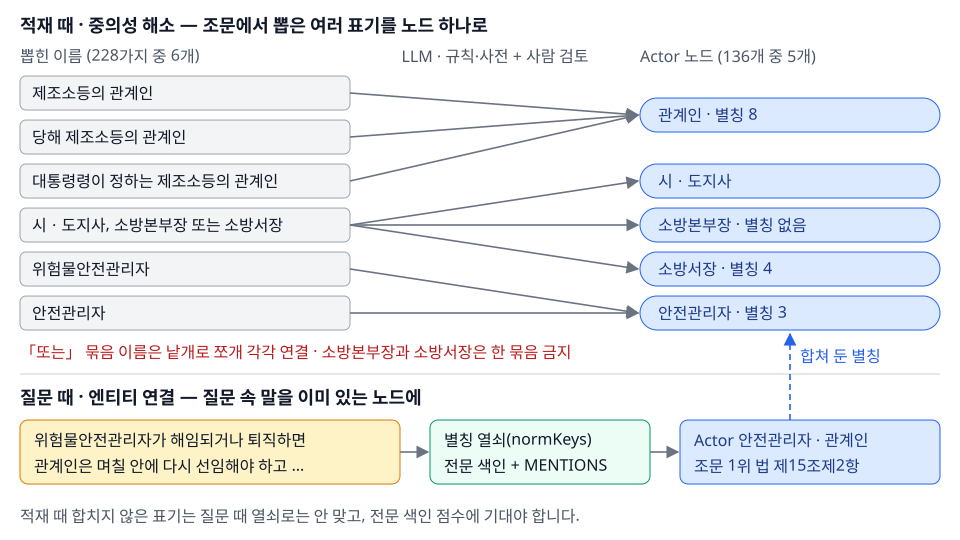

조문 본문에서 「누가 → 무엇을 → 언제까지 → 누구에게」를 LLM으로 뽑고, 같은 대상을 가리키는 여러 표기를 노드 하나로 합칩니다. LLM 방식과 규칙·사전 방식을 실행해 비교하고, 사람이 검토해 Actor 136개와 Norm 410개를 적재합니다.
무엇을 · 왜#
6장까지는 정규식으로 뼈대를 만들었습니다. 「제N조」·「①」 같은 표지로 조·항·호를 나누고, 「제15조제2항을 위반하여」 같은 인용 문구로 벌칙 호와 위반 조항을 연결했습니다. 그러나 「관계인은 … 30일 이내에 다시 안전관리자를 선임하여야 한다」에서 누가 무엇을 언제까지 누구에게 해야 하는지는 별도의 표지 없이 본문에 서술되어 있습니다. 이 정보를 LLM으로 추출합니다. 참고 노트(Graph DB based RAG)의 「자연어를 그래프 DB 로 구조화하는 과정」을 그대로 따릅니다.
| 노트의 단계 | 이 실습 |
|---|---|
| 1. Chunking — LLM의 토큰 크기에 맞춰 문서를 나눕니다 | 조 하나 = 덩어리 하나, 157개 |
| 2. Entity(Node)·Relation(Edge) 추출 | claude -p 157번 호출 |
| 3. Disambiguation — 같은 뜻의 엔티티 노드를 merge(통일) | LLM 방식과 규칙·사전 방식 비교 → 사람 검토 → MERGE |
엔티티 중의성 해소(Entity Disambiguation)는 적재 때 여러 표기를 노드 하나로 합치는 일입니다. 질문 때 질문 속 낱말을 기존 노드에 연결하는 일은 엔티티 연결(Entity Linking)이라고 하며, 엔티티 중의성 해소와 구분합니다. 범위는 위험물안전관리법·시행령·시행규칙 3종입니다.

시작하기 전에
6장의 적재와 원문 대조를 마치고 커밋했어야 합니다. Neo4j Desktop에서 law-graph가 Running이어야 하고, Claude Code는 env.ps1을 점 소싱한 창에서 열어 둡니다. 이 장은 claude -p를 157번 부르므로 약 6분 동안 구독 플랜 사용량을 씁니다.
따라 하기#
6장과 같은 Claude Code 세션에서 이어 갑니다. 결과 파일은 data\extract\(git 제외)에 저장됩니다. 아래 수치(조 157개, 이름 228가지, Actor 136개, Norm 410개)는 위험물안전관리법 3종으로 미리 실행해 둔 기록이며 여러분의 결과를 비교하는 기준이 됩니다. 단, 모델의 출력은 실행할 때마다 조금씩 다릅니다.
-
조 단위로 나누어 LLM으로 추출합니다. API 키 없이 구독 로그인으로
claude -p를 호출하게 합니다.왜 하나요? 「누가, 무엇을, 언제까지, 누구에게」는 정규식으로 잡을 표지가 없어 문장을 이해하는 LLM이 필요합니다. 조 하나씩 나눠 보내면 문맥이 끊기지 않고, 호출마다 비용과 시간을 잴 수 있습니다.
▶ Claude Code 입력창에 붙여 넣기
이제 의미층을 LLM 으로 뽑아 보자(schema.md 9절). 범위는 위험물안전관리법 법률·시행령·시행규칙. - Chunking: 조(Article) 하나를 한 덩어리로 잘라 LLM 에 보낸다. 덩어리 크기(글자 수)도 보여 줘. - LLM 은 API 키가 없으니 `claude -p` 를 서브프로세스로 부르고(--model haiku, --output-format json) 조마다 호출 시간과 비용(total_cost_usd)을 모아 줘. - 뽑을 것: 엔티티(주체·기관 Actor, 용어 Term 후보)와 관계(누가 → 무엇을 해야 하나 → 언제까지 → 누구에게). 이름은 조문에 쓰인 표기 그대로. - 아직 합치지 말고, 뽑힌 이름을 그대로 모아서 목록과 개수를 보여 줘(표기가 얼마나 갈리는지 보고 싶어). 결과는 data/extract/ 에 저장하고 extract_entities.py 로 만들어 줘. - 이 PC 는 Windows 야. claude 실행 파일은 shutil.which('claude') 로 찾고, subprocess 의 입력·출력은 encoding='utf-8' 로 주고받아.Claude는 법 제15조로 한 번 시범 호출한 뒤(26초, $0.0045) 156건을 6개씩 동시에 실행했습니다.
extract_entities.py는 조문을 표준입력으로 넘기고 출력 형식을 JSON 스키마로 고정합니다. 추출 지시의 핵심은 「이름은 조문에 쓰인 표기 그대로 — 띄어쓰기·가운뎃점·"또는"·"및"을 바꾸지 말고 줄이거나 풀어 쓰지 않는다」와 「조문에 없는 내용은 만들지 않는다」입니다.extract_entities.py가 조마다 부르는 명령은 다음과 같습니다. 파이썬이 인자 목록으로 넘기므로 셸 문법과 상관없이 동작합니다. 같은 호출을 PowerShell에서 손으로 시험하려면env.ps1을 점 소싱한 창에서 줄 끝`(백틱)으로 줄을 잇습니다.▶ 작업 창(Windows PowerShell)에 입력
Get-Content -Encoding utf8 data\extract\sample-article.txt | claude -p --model haiku --output-format json --system-prompt "<추출 지시>" ` --json-schema '<actors · terms · relations 스키마>' --tools= ` --no-session-persistence --disable-slash-commands --strict-mcp-config파이프로 넘기는 조문의 한글은
env.ps1이$OutputEncoding을 UTF-8로 바꿔 두어야 그대로 전달됩니다(Windows PowerShell 5.1의 기본값은 ASCII라 한글이?가 됩니다).--json-schema에 실제 JSON을 넣을 때 주의: Windows PowerShell 5.1은 외부 프로그램에 인자를 넘길 때 작은따옴표 문자열 안의 큰따옴표(")를 지워 버립니다. 그래서 JSON을 그대로 넣으면--json-schema is not valid JSON으로 실패하고, 큰따옴표를\"로 바꿔 넘겨야structured_output={"actors":[…]}가 돌아옵니다. 5.1에서 손으로 시험할 때는$schema = '{"type":"object", …}'처럼 변수에 담은 뒤--json-schema $schema.Replace('"','\"')로 넘깁니다. PowerShell 7.3 이상은 큰따옴표를 그대로 넘기므로--json-schema $schema로 씁니다. 실제 실습에서는extract_entities.py가 파이썬에서 호출하므로 이 문제가 생기지 않습니다.도구를 모두 끌 때는
--tools ""가 아니라--tools=로 씁니다. Windows PowerShell 5.1은 외부 프로그램에 빈 문자열""을 넘기지 못하고 빼 버리기 때문입니다.--tools=는 5.1과 7 모두에서 같은 뜻으로 전달됩니다.법 제27조(388자)를 보내 받은 응답에는 주체·기관 8개, 용어 4개, 관계 4건이 있었습니다. 다음은 그중 제2항의 관계 한 건입니다.
참고 — Claude가 만든 내용(직접 입력하지 않음)
{"provision": "제2항", "modality": "의무", "subject": "제1항의 사태를 발견한 자", "action": "그 사실을 통보", "object": "그 사실", "trigger": "제1항의 사태를 발견한 때", "deadline": "즉시", "recipient": "소방서, 경찰서 또는 그 밖의 관계기관"}항목 기록 덩어리 조 157개(법 46 · 영 29 · 규칙 82), 합계 64,845자, 중앙값 322자, 최대 1,952자(시행규칙 제65조) 호출 157번 모두 성공( claude-haiku-5-5), 조당 평균 12.8초, 6개 동시 실행으로 약 6분비용 합계 $0.268(조당 평균 $0.0017) 뽑힌 것 주체·기관 이름 228가지, 용어 215가지, 관계 410건(의무 278 · 권한 105 · 금지 27) 「기술원 또는 안전원」처럼 조문의 두 이름을 모델이 스스로 묶어 「표기 그대로」라는 지시를 어긴 이름도 8가지 있었습니다. 모델의 출력은 실행할 때마다 달라질 수 있습니다.
-
합치기 전 목록을 봅니다. 입력창에서
!를 붙이면 셸 명령을 바로 실행합니다.왜 하나요? 같은 기관이 여러 표기로 뽑힌다는 문제를 눈으로 확인해야 왜 중의성 해소가 필요한지, 어떤 기준으로 합칠지 정할 수 있습니다.
별도의 PowerShell 창(
C:\lab\law-graph)에서 실행합니다.actors.tsv는 첫 줄이 머리글이고 첫 열이 이름, 셋째 열이 나온 조의 수라고 가정합니다(Claude가 다른 열 순서로 만들었다면$c[0],$c[2]의 번호를 바꿉니다).▶ 작업 창(Windows PowerShell)에 입력
Get-Content -Encoding utf8 data\extract\actors.tsv | Select-Object -Skip 1 | ForEach-Object { $c = $_ -split "`t"; if ($c[0] -match '소방본부장|소방서장|도지사|관계인|안전관리자') { '{0}({1})' -f $c[0], $c[2] } }"`t"는 PowerShell에서 탭 문자입니다. Claude Code 입력창의!명령은 Windows에서도 Git Bash로 실행되므로awk같은 bash 명령을!뒤에 붙여도 동작합니다. 이 교재는 사람이 입력하는 명령을 PowerShell로 통일합니다.다섯 낱말이 포함된 이름만 49가지입니다. 다음은 낱말별 표기 가짓수와 실제 표기 일부입니다(괄호는 해당 표기가 나온 조의 수).
낱말 가짓수 실제 표기(일부) 소방서장 19 소방서장(36), 시ㆍ도지사, 소방본부장 또는 소방서장(10), 소방본부장 또는 소방서장(5), 관할소방서장(2), 관할 소방서장(1), 소방본부장이나 소방서장(1) 관계인 18 제조소등의 관계인(21), 관계인(13), 대통령령이 정하는 제조소등의 관계인(2), 이동탱크저장소의 관계인(2), 제조소 등의 관계인(1), 당해 제조소등의 관계인(1) 시ㆍ도지사 13 시ㆍ도지사(50), 제조소등의 소재지를 관할하는 시ㆍ도지사(1), 소방청장 또는 시ㆍ도지사(1) 안전관리자 8 안전관리자(10), 위험물안전관리자(3), 해당 제조소등의 안전관리자(1), 소방안전관리자(1) 원인은 「A 또는 B」 묶음 이름(51가지), 「당해」 같은 수식어, 「…하는 자」 형태의 서술(55가지), 띄어쓰기·약칭 차이, 「자」 같은 범용 낱말이었습니다. 「이동탱크저장소의 관계인」, 다른 법의 직책인 「소방안전관리자」처럼 범위가 다른 이름은 합치면 뜻이 바뀝니다.
-
두 방법으로 중의성을 해소합니다. (가)의 프롬프트는 참고 노트의
disambiguation_prompt원문입니다(오타 disambiugation도 그대로 둡니다).왜 하나요? LLM 방식과 규칙·사전 방식은 잘하는 일이 다릅니다. 같은 목록에 두 방법을 적용해 나란히 비교하면 어느 쪽을 믿고 어디에 사람의 검토가 필요한지 근거를 가지고 정할 수 있습니다.
▶ Claude Code 입력창에 붙여 넣기
이제 중의성 해소(Entity Disambiguation)를 두 방법으로 해 보고 비교해 줘. 대상은 방금 뽑은 주체·기관 이름 목록. (가) LLM 방식: 아래 프롬프트에 이름 목록을 붙여 claude -p 로 한 번 보내고, 같은 번호끼리 묶어. #Act as a entity disambiugation tool and tell me which values reference the same entity. #For example if I give you ##Birds #Bird #Ant ##You return to me ##Birds, 1 #Bird, 1 #Ant, 2 ##As the Bird and Birds values have the same integer assigned to them, it means that they reference the same entity. #Now process the following values (나) 규칙·사전 방식: 가운뎃점 정규화(ㆍ→·)와 그래프의 Term(제2조 정의, 「이하 "…"라 한다」 약칭의 aliases)을 사전으로 써서 묶어. 두 결과를 나란히 표로 보여 주고(묶음 수, 서로 다르게 묶은 곳), 호출 수·시간·비용도 적어 줘. 아직 Neo4j 에는 넣지 마. disambiguate.py 로 만들어 줘.(가)는 이름 228개를 한 줄씩 붙여 한 번 보냈습니다. 다음은 응답 일부입니다(같은 번호 = 같은 대상).
출력 예시
소방서장, 2 관할소방서장, 2 관계인, 8 관계자, 8 대리인, 55 대리자, 55(나)는 정규화한 문자열이 같거나, 6장에서 만든 Term(위험물안전관리법 47개: 정의 11 · 약칭 25 · 괄호정의 11)의 대표 이름·별칭과 같을 때만 묶습니다. 비교 결과는 아래 「두 방법을 나란히」에서 확인합니다.
-
사람이 검토해 고치고
MERGE합니다. 비교표를 읽고 네 가지 기준을 정해 줍니다.왜 하나요? 잘못 합친 노드는 질의 결과를 조용히 틀리게 만듭니다(예: 소방본부장과 소방서장을 하나로 보면 권한 주체가 틀림). 사람이 기준을 정해 주어야 그래프에 넣을 수 있는 품질이 됩니다.
▶ Claude Code 입력창에 붙여 넣기
검토했어. 이렇게 고쳐서 합치자. 1. 「소방본부장 또는 소방서장」「시ㆍ도지사, 소방본부장 또는 소방서장」처럼 「또는·및·,」로 묶인 이름은 한 기관이 아니야. 낱개(소방본부장 / 소방서장 / 시ㆍ도지사 …)로 쪼개서 각각에 연결해. 특히 소방본부장과 소방서장은 다른 기관이니 절대 한 묶음에 넣지 마. 2. 「관계인」과 「제조소등의 관계인」「당해 제조소등의 관계인」처럼 수식어만 붙은 이름은 같은 관계인으로 합쳐. 「관계자」는 관계인이 아니니 떼어 내. 3. 「자」「사람」「누구든지」는 주체 엔티티가 아니니 빼. 4. 약칭(시ㆍ도, 탱크시험자, 위험물안전관리자 → 안전관리자)은 규칙·사전 결과를 따라. 최종 묶음을 대표 이름 + aliases 로 Actor 노드에 MERGE 하고(대응하는 Term 이 있으면 DEFINED_BY), 추출한 관계는 schema.md 9절대로 Norm(BASED_ON·HAS_SUBJECT·ADDRESSED_TO, reviewed=false)으로 넣어 줘. 합치기 전·후 개수와, 1~3번이 실제로 어떻게 바뀌었는지 보여 주고 커밋해 줘.Claude가 만든
ingest_semantic.py는 묶음 이름 30가지를 낱개로 쪼개고(소방본부장·소방서장이 한 묶음이 되면 오류 발생), 관계인의 9가지 표기를 Actor 「관계인」(별칭 8) 하나로 모으고, 「자」「사람」「누구든지」는Norm.subjectText에만 남겼습니다. 약칭은 Term 사전대로 안전관리자 ← 위험물안전관리자, 탱크시험자 ← 탱크안전성능시험자, 기술원 ← 한국소방산업기술원 등으로 묶였습니다. 조문 표현과 다른 trigger 104건·deadline 6건은 Norm을 버리지 않고 값만 비워uncheckedFields에 표시했습니다. 이후 Claude가 남은 오류 두 개를 스스로 보고했습니다. -
잘못 합친 두 개를 떼어 냅니다.
왜 하나요? AI가 스스로 보고한 오류도 사람이 판단해 바로잡아야 합니다. 「합치면 안 되는 이름」을 코드에 목록으로 남겨 두면 다시 적재해도 같은 실수가 반복되지 않습니다.
▶ Claude Code 입력창에 붙여 넣기
말한 대로 잘못 합친 두 개도 고쳐 줘. 「대리인」(양벌규정)은 「대리자」(안전관리자 대리)가 아니고, 「탱크시험자의 업무에 종사하는 자」는 「기술인력」이 아니야. 둘 다 별칭에서 떼어 내서 다시 적재하고, 고친 뒤 Actor 수와 관계인·소방본부장·소방서장·안전관리자·대리자 노드의 별칭을 보여 줘.LLM의 묶음에서 제외할 이름 목록
STAND_ALONE이 생기고,uv run ingest_semantic.py --reset(Actor·Norm만 삭제 후 재적재)으로 다시 적재했습니다.합치기 전 합친 뒤 고친 뒤 주체·기관 이름 228가지 Actor 134 Actor 136 관계 410건 Norm 410(모두 reviewed=false)410 관계 수 BASED_ON410 ·HAS_SUBJECT454 ·ADDRESSED_TO222 ·DEFINED_BY20같음 그래프 전체 6장의 노드·관계 수 노드 +544 · 관계 +1,106 노드 +546 · 관계 +1,106 -
질문할 때의 엔티티 연결을 확인합니다.
왜 하나요? 적재 때 합쳐 둔 별칭이 실제로 질문의 낱말을 올바른 노드에 연결하는지 확인해야, 9장에서 Claude가 질문을 받았을 때 제대로 찾아갈 수 있다는 것을 미리 알 수 있습니다.
▶ Claude Code 입력창에 붙여 넣기
이번엔 질문 쪽을 보자. 골든 퀘스천 2번 문장의 「위험물안전관리자」「관계인」이 별칭(normKeys·aliases)과 전문 색인으로 그래프의 어떤 Term·Actor 노드와 조문에 연결되는지 Cypher 로 직접 돌려서 보여 줘(질의문과 결과 그대로). 적재 때 한 중의성 해소와, 질문 때 하는 엔티티 연결이 어떻게 다른지도 두세 줄로 정리해 줘.Claude가 실행한 질의 다섯 개 중 두 개입니다. 먼저 공백을 뺀 질문 문장에 Actor의 별칭 키(
normKeys)가 들어 있는지 확인합니다(두 번째 질문 문장은'…'로 줄였습니다).참고 — Claude가 만든 내용(직접 입력하지 않음)
MATCH (a:Actor) WHERE any(k IN a.normKeys WHERE '위험물안전관리자가해임되거나퇴직하면관계인은며칠안에다시선임해야하고,선임한뒤에는어떤절차를밟아야하는가?' CONTAINS k) OPTIONAL MATCH (a)-[:DEFINED_BY]->(t:Term) RETURN a.name AS actor, a.kind AS kind, [k IN a.normKeys WHERE '…' CONTAINS k] AS matchedKeys, size(a.aliases) AS aliasCount, t.termId AS definedBy출력 예시
actor, kind, matchedKeys, aliasCount, definedBy "안전관리자", "수범자", ["안전관리자", "위험물안전관리자"], 3, "위험물안전관리법:안전관리자" "관계인", "수범자", ["관계인"], 8, "위험물안전관리법:관계인"다음은 조문 전문 색인(
provision_text, cjk 분석기)으로 찾고, 그 Term을 언급(MENTIONS)하는 조문을 먼저 표시합니다.참고 — Claude가 만든 내용(직접 입력하지 않음)
CALL db.index.fulltext.queryNodes('provision_text', '위험물안전관리자가 해임되거나 퇴직하면 관계인은 며칠 안에 다시 선임해야 하고 선임한 뒤에는 어떤 절차를 밟아야 하는가') YIELD node AS p, score WHERE p.lawId = '위험물안전관리법' AND p.isCurrent AND p.status = '현행' WITH p, score, [t IN ['위험물안전관리법:안전관리자', '위험물안전관리법:관계인'] WHERE EXISTS { (p)-[:MENTIONS]->(:Term {termId: t}) }] AS mentioned RETURN p.citation AS provision, [m IN mentioned | split(m, ':')[1]] AS mentions, round(score, 2) AS score ORDER BY size(mentioned) DESC, score DESC LIMIT 5출력 예시
provision, mentions, score "위험물안전관리법 제15조제2항", ["안전관리자", "관계인"], 31.86 "위험물안전관리법 제15조제4항", ["안전관리자", "관계인"], 24.67 "위험물안전관리법 제11조의2제4항", ["안전관리자", "관계인"], 22.81 …(2개 줄임)질문의 「위험물안전관리자」가 별칭 키로 「안전관리자」에 바로 연결되고, 1위 조문은 재선임 기한이 적힌 제15조제2항입니다.
두 방법을 나란히#
| 항목 | (가) LLM(노트의 프롬프트) | (나) 규칙·사전 |
|---|---|---|
| 호출 · 시간 · 비용 | 1번 · 94.9초 · $0.0156 | 0번 · 0.018초 · $0 |
| 묶음 수(228가지 →) | 164 | 217 |
| 같은 대상으로 본 이름 쌍 | 99 | 12 |
| 잘 묶은 것 | 소방서장/관할소방서장/관할 소방서장, 「제조소등의 관계인」 계열 8개 | 약칭: 탱크시험자/탱크안전성능시험자, 시ㆍ도/특별시ㆍ광역시ㆍ… |
| 잘못 묶은 것 | 관계인=관계자, 대리자=대리인, 자=사람=누구든지 | 「부과권자」 약칭을 제39조 밖의 같은 표기에도 붙임 |
규칙·사전 방식의 0.018초는 실행 기록(summary.json)의 값입니다. 영상 속 Claude의 표에는 같은 값이 「0.3초 이하」로 나옵니다.
두 방법이 똑같이 묶은 쌍은 8개뿐입니다(LLM만 91, 규칙만 4). 둘 다 「A 또는 B」 묶음 이름 51가지를 쪼개지 못했고, 「관계인」과 「제조소등의 관계인」을 따로 두었습니다. LLM은 이름 목록만 받아 조문 문맥과 법에서 정한 약칭을 모르고, 뜻이 비슷해 보이는 낱말을 합칩니다. 규칙·사전은 근거가 분명하지만 228가지 중 200가지를 다른 이름과 묶지 못했습니다(소방서장 같은 기관 이름은 사전에 없습니다).
노트가 「Graph DB 를 이용하여 동의어들을 찾는 (Dictionary 형식)」이라고 적은 방식이 (나)입니다. 6장에서 정의 조항과 약칭 문형으로 채운 Term의 aliases가 곧 사전입니다. 그래서 두 방식을 결합하고 사람이 검토했습니다. 약칭은 사전이, 수식어 차이는 LLM이, 묶음 쪼개기와 「합치면 안 되는 쌍」은 사람이 정한 규칙이 맡습니다.
노트는 LLM 방식 옆에 「돈이 많이 듬」이라고 적었습니다. 기록으로는 추출 157번 $0.268(약 6분), 중의성 해소 1번 $0.0156(94.9초)이고. 비용은 claude -p가 반환한 API 요금 환산치이며 구독 로그인에서는 사용 한도에 반영됩니다. 이 규모에서는 비용이 적게 들었지만 사람이 틀린 묶음을 찾아 고치는 검토(따라 하기 4·5단계)가 필요했습니다.
적재 때 중의성 해소와 질문 때 엔티티 연결#
| 적재 때 중의성 해소 | 질문 때 엔티티 연결 | |
|---|---|---|
| 하는 일 | 뽑은 여러 표기가 같은 대상인지 판정해 노드 하나로 합침 | 질문의 낱말을 이미 있는 노드 중 어디에 붙일지 고름 |
| 언제 · 결과 | 적재할 때 한 번, 그래프에 고정(틀리면 다시 적재) | 질문할 때마다, 그래프는 바꾸지 않음 |
| 방법 | LLM · 규칙·사전 + 사람 검토 | 별칭 키(normKeys), 전문 색인 |
질문의 「위험물안전관리자」가 「안전관리자」에 바로 연결되는 것은 적재 때 별칭으로 합쳐 두었기 때문입니다. 9장에서는 Claude가 MCP로 답할 때 별칭 노드 대신 문자열 포함(CONTAINS)으로 찾는 모습도 봅니다.
확인#
Neo4j Browser에 붙여 넣어 주요 Actor 네 개를 확인합니다.
▶ Neo4j Browser(http://localhost:7474)에 붙여 넣기
MATCH (a:Actor) WHERE a.name IN ['관계인', '소방본부장', '소방서장', '안전관리자']
RETURN a.name AS actor, size(a.aliases) AS aliases,
COUNT { (a)<-[:HAS_SUBJECT]-(:Norm) } AS asSubject,
COUNT { (a)<-[:ADDRESSED_TO]-(:Norm) } AS asRecipient ORDER BY actor;
출력 예시
actor, aliases, asSubject, asRecipient
"관계인", 8, 62, 23
"소방본부장", 0, 28, 6
"소방서장", 4, 35, 45
"안전관리자", 3, 16, 0
소방본부장과 소방서장이 별도 노드로 존재하고, 소방서장의 별칭(관할소방서장 등 4개)에 소방본부장이 없으면 됩니다.
남은 한계#
Actor 136개 중 「제조소등」「행정안전부령」「정기검사」처럼 주체가 아닌 노드가 kind=기타로 51개 남았습니다. 수식절을 떼고 합친 14가지(「완공검사합격확인증을 재교부한 시ㆍ도지사」→ 시ㆍ도지사 등)는 범위를 넓혀 합친 것입니다. Norm 410개는 모두 reviewed=false이고, SANCTIONED_BY·DELEGATED_TO·NEXT·ON_BREACH_OF 관계는 아직 뽑지 않았습니다. 「그 밖의 관계기관」이 잘려 들어간 오류(아래)도 그대로 두었습니다.
막히면
LLM이 서로 다른 주체를 같은 번호로 묶습니다 (GL-10). 증상: 노트의 프롬프트로 이름 228가지를 보냈더니 「관계인」=「관계자」, 「대리자」=「대리인」, 「자」=「사람」=「누구든지」가 같은 번호로 묶이고, 약칭(탱크시험자/탱크안전성능시험자)은 묶지 못하고, 「소방본부장 또는 소방서장」은 한 엔티티로 둡니다. 원인: LLM은 이름 목록만 받아 조문 문맥과 법에서 정한 약칭을 모릅니다. 조치: 묶음 이름은 「또는·및·,」로 쪼개고, 소방본부장≠소방서장 검사를 추가하고, 약칭은 Term 사전을 우선합니다. 잘못 묶인 이름은 ingest_semantic.py의 STAND_ALONE에 넣고 uv run ingest_semantic.py --reset을 실행합니다.
Actor 이름의 앞 글자가 잘렸습니다 (GL-14). 증상: 9장 4번 질문 중 Claude가 「제27조제2항 Norm 의 수신 Actor 중 하나가 이름이 " 밖의 관계기관" 으로 저장되어 있다」고 보고했습니다(원문은 「소방서, 경찰서 또는 그 밖의 관계기관」). 원인: 묶음 이름을 쪼갤 때 접속어를 「이나·나·과 그」까지 넓혀 「그 밖의」의 「그」를 잘라 냈습니다. 조치: Claude Code에 「" 밖의 관계기관" Actor 는 「그 밖의 관계기관」이야. 쪼개기 접속어에서 「그」를 빼고 다시 적재해 줘」라고 요청하고 uv run ingest_semantic.py --reset을 실행합니다. 확인: MATCH (a:Actor) WHERE a.name STARTS WITH ' ' OR a.name CONTAINS '관계기관' RETURN a.name, a.aliases를 실행합니다. (이 교재는 9장 기록과 같은 데이터를 유지하려고 고치지 않았습니다.)
정리와 다음 장#
이 장에서 한 일
| 한 일 | 어디서 | 결과물 |
|---|---|---|
| 조 단위로 Norm·Actor 추출 | Claude Code 입력창(claude -p 시험은 작업 창) |
추출 결과 파일 |
| 합치기 전 이름 목록 확인 | Claude Code 입력창의 ! 명령 |
이름별 빈도표 |
두 방법으로 중의성 해소, 사람이 검토해 MERGE |
Claude Code 입력창 | Actor 노드와 별칭(alias) |
| 잘못 합친 것 분리, 질문 때 엔티티 연결 확인 | Claude Code 입력창 / 작업 창 | check-actors 결과 |
왜 중요한가요? 「관할 소방서장」「소방본부장 또는 소방서장」처럼 같은 대상이 여러 이름으로 적혀 있으면, 질문할 때 일부 조문을 놓칩니다. 이름을 합쳐 두어야 9장의 질문이 관련 조문을 빠짐없이 찾습니다.
다음 장(8장)에서 할 일: 지금까지 Claude가 파이썬 스크립트로 그래프에 접근했다면, 이제는 Neo4j MCP 서버를 연결해 Claude Code가 그래프를 직접 조회하게 합니다. 먼저 MCP 서버에 필요한 APOC 플러그인을 Neo4j Desktop에서 설치합니다. .mcp.json은 Claude가 만들고, 연결 확인은 작업 창과 Claude Code의 /mcp에서 합니다.
확인 문제#
1. 노트의 LLM 프롬프트로 묶었더니 「관계인」과 「관계자」가 같은 번호가 됐습니다. 왜 이런 일이 생기고, 이 실습은 어떻게 막았나요?
정답
LLM은 이름 목록만 받고 조문 문맥은 보지 못해, 글자와 뜻이 비슷해 보이는 낱말을 같은 대상으로 봅니다. 사람이 검토해 「관계자는 관계인이 아니다」라고 정했고, ingest_semantic.py에 합치면 오류를 내는 쌍과 LLM 묶음에서 떼어 내는 이름 목록(STAND_ALONE)을 두었습니다.
2. 규칙·사전 방식은 「탱크시험자」와 「탱크안전성능시험자」를 묶었지만 LLM 방식은 묶지 못했습니다. 규칙·사전 방식의 사전은 어디서 왔나요?
정답
6장에서 적재한 Term 노드입니다. 정의 조항과 「(이하 "…"라 한다)」 약칭 문형에서 대표 이름과 별칭을 채웠습니다. 법에서 정한 약칭이라 근거가 분명하지만, 사전에 없는 이름(소방서장 등)은 묶지 못합니다.
3. 골든 퀘스천의 「위험물안전관리자」와 조문의 「안전관리자」는 적재 때와 질문 때 각각 무엇으로 이어졌나요?
정답
적재 때는 중의성 해소로 「위험물안전관리자」를 Actor·Term 「안전관리자」의 별칭으로 합쳐 두었습니다. 질문 때는 엔티티 연결로, 질문 문장에 그 별칭 키(normKeys)가 들어 있는지 보거나 전문 색인 점수로 같은 노드를 찾았습니다.
참고 자료#
- Creating a Knowledge Graph From Video Transcripts With GPT-4 — 노트의 disambiguation 프롬프트 출처
- 영상 ai graph db disambiguation
- Constructing knowledge graphs from text using OpenAI functions (Tomaz Bratanic)